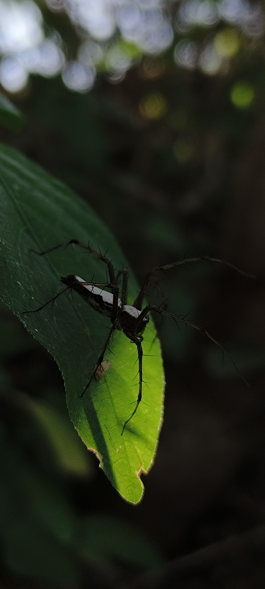
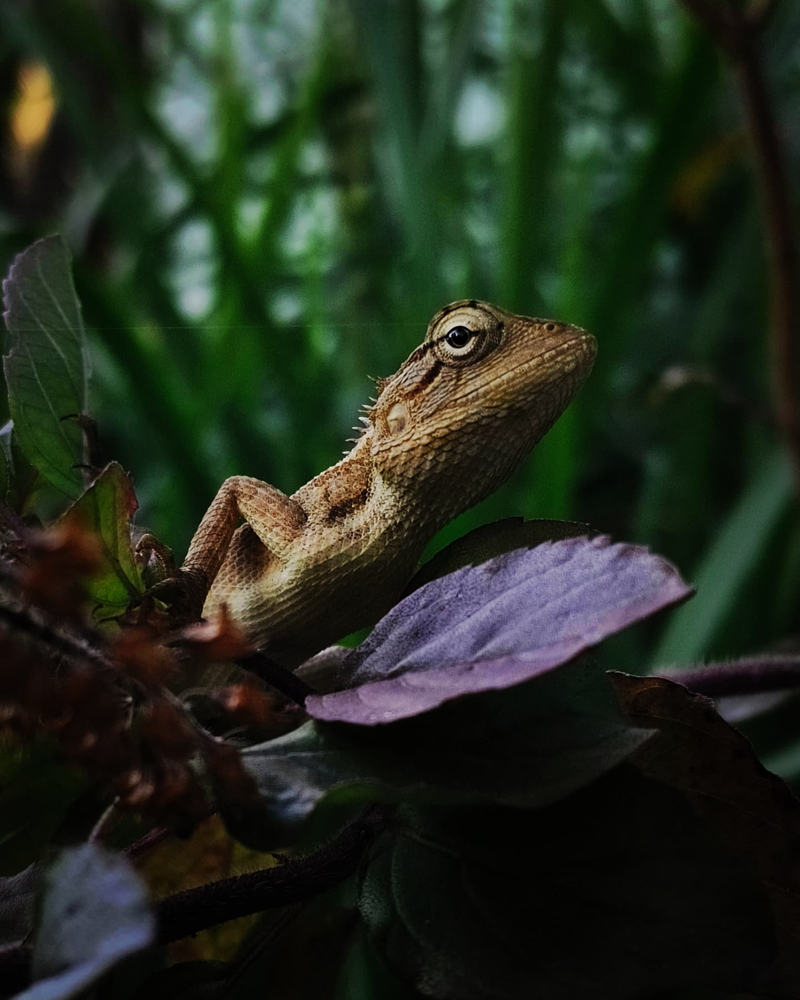
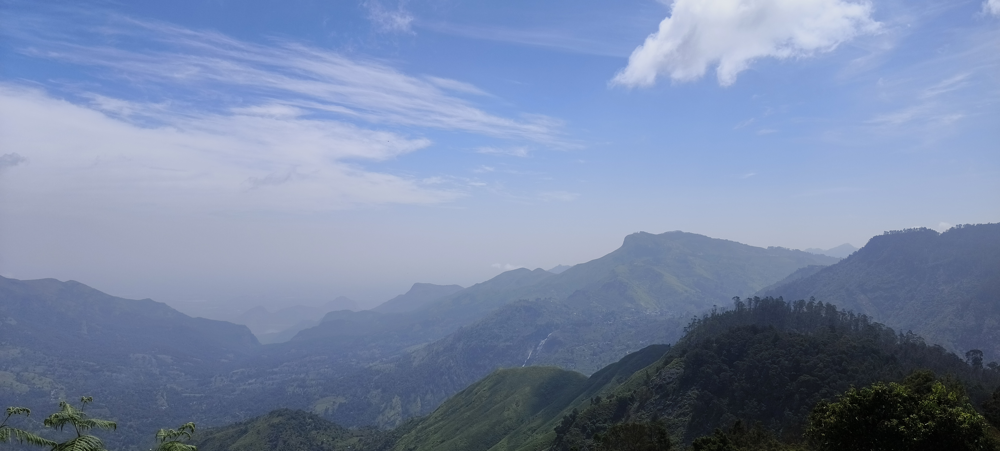
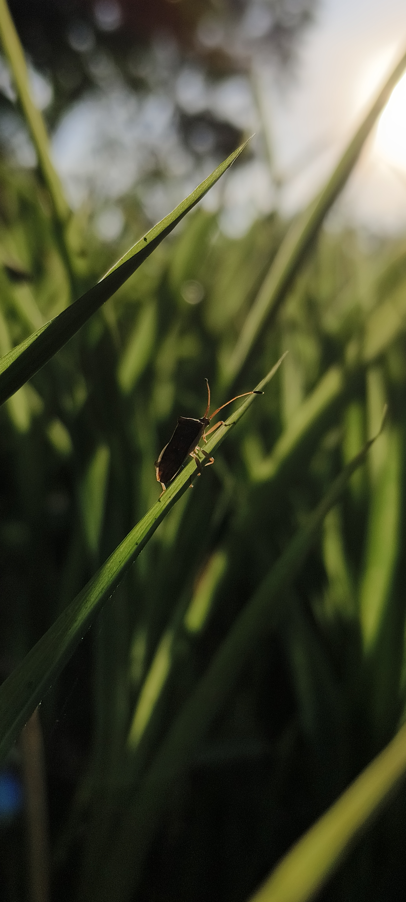
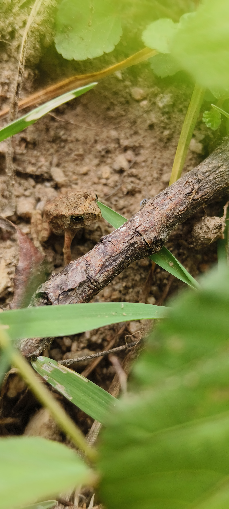
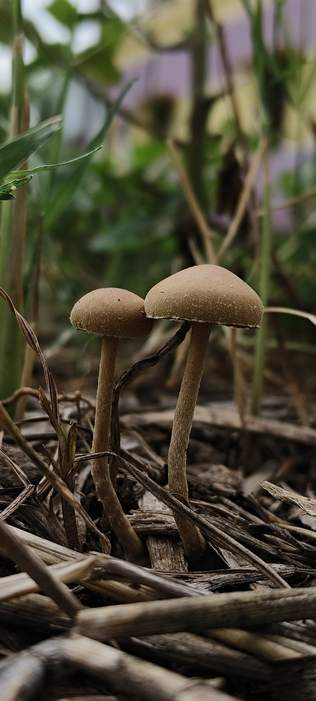

WELCOME TO MY MOBILE PHOTOGRAPHY
Exploring the beauty of nature through mobile photography, macro, wildlife and landscape photography.
📱 Shot on Vivo T2 Pro
View My WorkABOUT ME
Dreamshots 12 is a passion-driven mobile photography journey focused on capturing the beauty of nature and the small moments that are often overlooked.
From tiny insects resting on leaves to peaceful landscapes, every photograph is captured with patience, creativity and a love for nature.
📱 All photographs are captured using Vivo T2 Pro.
Beautiful moments from nature.
Exploring tiny details up close.
Capturing wildlife in natural moments.
MY COLLECTION
A collection of moments captured from nature using my Vivo T2 Pro.

Mobile Macro Photography

Mobile Macro Photography

Mobile Landscape Photography

Mobile Nature Photography

Mobile Wildlife Photography

Mobile Nature Photography
GET IN TOUCH
For photography collaborations, creative projects and enquiries, feel free to contact me.
📸 Instagram: Dreamshots 12
📞 Phone: 9789328903
📧 Email: gvbaalajigvbaalaji@gmail.com
📱 Photography Device: Vivo T2 Pro